Música
Una selecció d'esdeveniments que abracen diversos estils musicals en espais singulars. Des del Tastet de Gòspel al santuari de la Mare de Déu dels Munts, al Lluçanès, fins al Dúo Tournesol al monestir de Sant Llorenç, al Berguedà, passant per Paraula Viva, on la poesia es combina amb el cant i la dansa

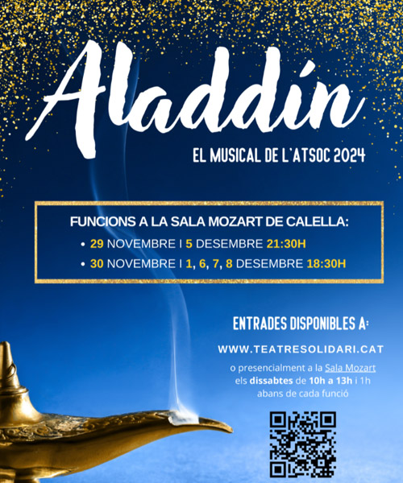
Aquestes festes, submergeix-te en l’encant d’Aladdín amb un musical ple d’aventures. Descobreix com un jove lladregot s’enamora de la princesa Jasmine i accepta el repte de Jafar: trobar una llàntia màgica que amaga un geni capaç de fer realitat tots els desitjos.
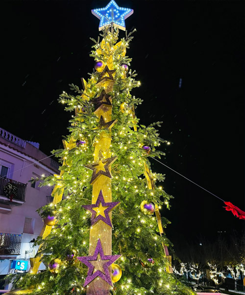
El cantautor Joan Dausà presenta el seu Concert de Nadal en un format íntim de veu i piano. Aquest recital especial ofereix una experiència propera, on Dausà recupera els seus orígens musicals i interpreta les seves cançons més emblemàtiques.
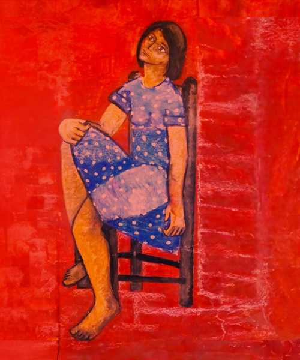
Un dels grans atractius de l’11è festival MusicalBruc Llums d’hivern és l'espectacle "35" dels Spanish Brass, juntament amb el "Guillermotta" de Jordi Vidal i "Barrocomatik" de Kune Teatre. El concert Llum, amb la Cobla Marinada i el cantaor Pere Martínez, fusionarà cançons de protesta amb arranjaments de jazz.
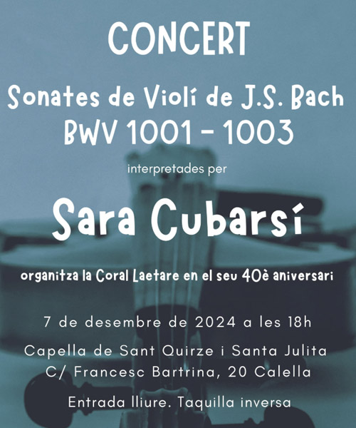
Gaudeix d'un concert únic amb la violinista Sara Cubarsí, que presenta les Sonates de violí de J.S. Bach BWV 1001. Aquesta obra mestra, considerada una de les més importants del repertori per a violí sol, serà interpretada amb la seva tècnica i sensibilitat úniques. Una oportunitat de submergir-se en la música profunda i atemporal de Bach.
{kind=link}
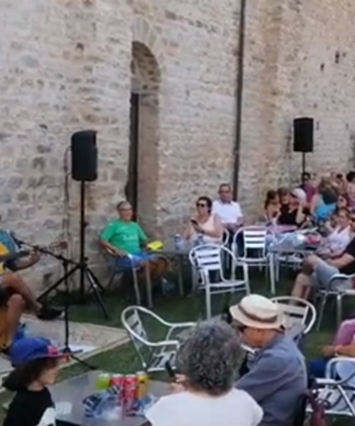
Vine a gaudir d’un vermut musical únic amb Lab Sons! Un espai on la música en directe es fusiona amb els sabors, creant una experiència que desperta tots els sentits. Lab Sons, un grup eclèctic i apassionat per la música afroamericana, interpreta clàssics del jazz, blues, funk i rock’n’roll, amb un toc personal i respectuós
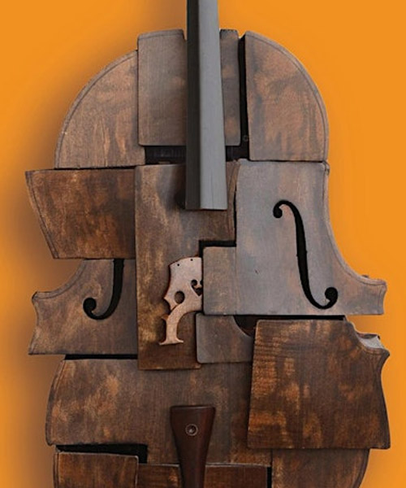
El duo de flautes travesseres format per Neus Aznar i Joaquim Ferrer et transportarà a través de la història musical, des de les elegants línies del Barroc fins a la passió del tango. El concert té lloc a la Casa Aymat i que s’emmarca en el cicle «Cambres Singulars».
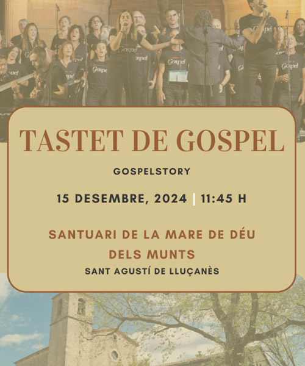
Vine a viure una experiència única al cor del Lluçanès amb el Tastet de Gòspel. Al santuari de la Mare de Déu dels Munts, GospelStory oferirà un repertori ple d’emocions, i connectarà ànima i tradició a través de les potents melodies del gòspel.
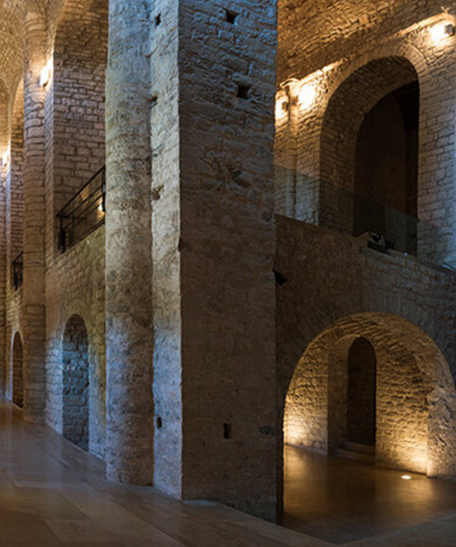
El Dúo Tournesol presenta un concert de Nadal al monestir de Sant Llorenç, amb un repertori que uneix violí, piano i les veus de Bàrbara Wincor i María Pascual. Interpretaran obres de Mozart, Vivaldi, Amy Beach i nadales tradicionals catalanes i internacionals, creant una atmosfera càlida i festiva per a tots els públics.
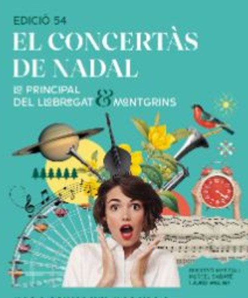
La 54a edició del Concertàs de Nadal presenta un espectacle únic amb La Principal del Llobregat i Montgrins. Dirigit per Marcel Sabaté i Jordi Molina, el concert compta amb la percussió de Jaume Yelo i Martí Solivera, els rapsodes Dolors Vives i Maria Rosa Serra, i la veu de Maria Vives.
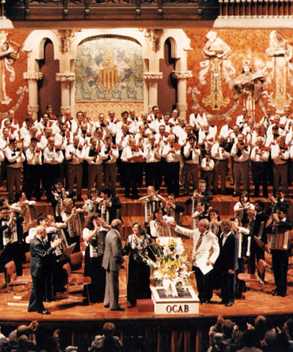
Tanca l'any amb un concert únic a càrrec de l'Orquestra de Cambra d'Acordions de Barcelona (OCAB), fundada el 1948. La formació, que ha triomfat a les grans sales de Catalunya i ha portat la seva música arreu del món, oferirà repertori variat i d'alta qualitat, amb l'objectiu de continuar ennoblint l'acordió com a instrument clàssic.
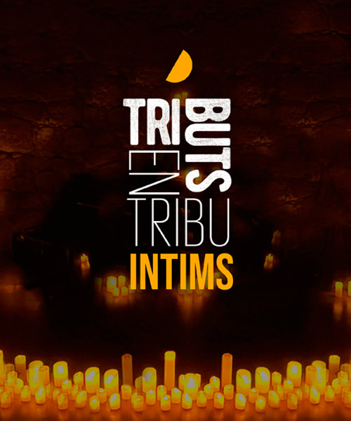
Aquest Nadal, viu una experiència única amb Tributs en Tribu Íntims: ABBA. Gaudeix d’un concert a la llum de les espelmes, on el grup Tribut ABBA Voices, amb més de 15 anys de trajectòria, interpreta les cançons més emblemàtiques de la banda sueca.
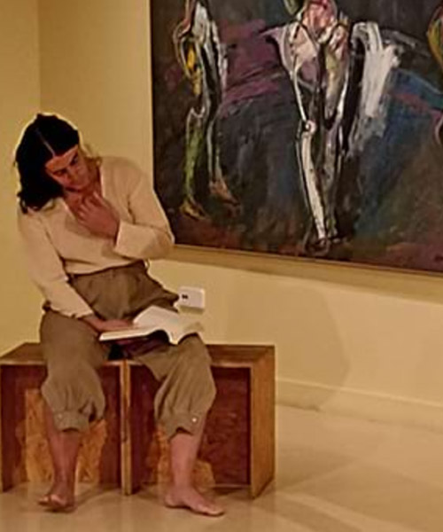
En aquest concert especial de Reis, Neus Borrell (veu) i Mireia de Querol (dansat) porten a l’escenari Paraula Viva, una proposta on els versos de Safo, Maria Mercè Marçal, Felícia Fuster i Àngels Moreno cobren nova vida. A través de la combinació de veu i dansa, els poemes es transformen en una acció efímera que connecta amb l’exposició De l'Oblit a la Revolta.